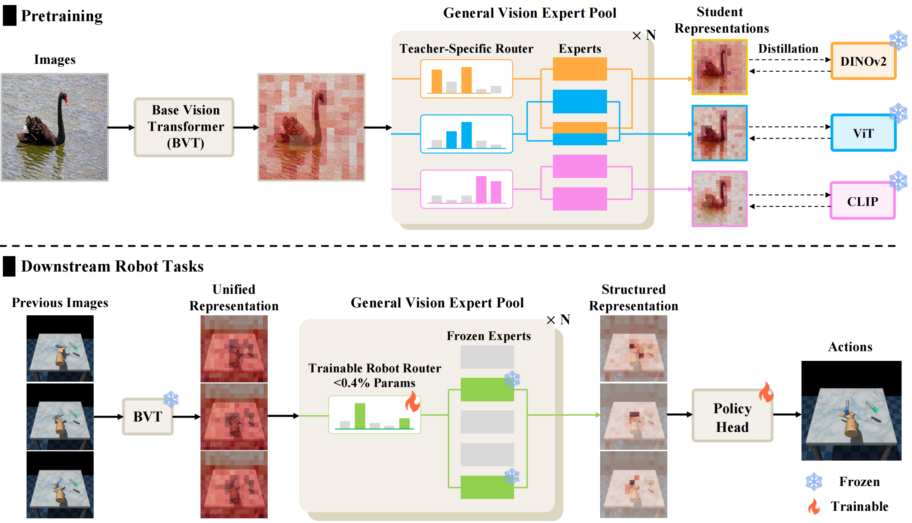

GeVER: General Vision Expert Transformer for Robot Learning via Foundation Distillation and Dynamic Routing
Anonymous Authors
In Submission to ICCV 2025
Code (To be Realeased Upon Acceptance)

We present General
V
ision
E
xpert Transformer for
R
obot Learning (VER), a novel framework that distills knowledge from multiple vision foundation models (
DINOv2
,
ViT
,
CLIP
) into a unified expert.